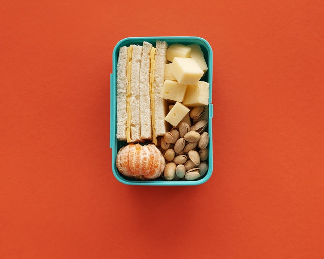

Exercícios de bicicleta
beneficíos dos exercícios ao ar livre. Clique aqui

Para tornar a sua vida mais feliz e muito mais tranquila, trabalhamos em uma plataforma onde você vai conguistar o condicionamento físico dos seus sonhos. Com equilíbio, disciplina e muita facilidade a Health Track vai te trazer a rapidez que procura. Uma alimentação saudável é um ingrediente de uma vida bem equilibrada: significa obter o suficiente de todos os nutrientes importantes; escolher uma variedade de cada grupo alimentar; e evitar excesso de gordura, açúcar, sal e álcool. Sua saúde física, mental e social está ligada à sua dieta e vice-versa.